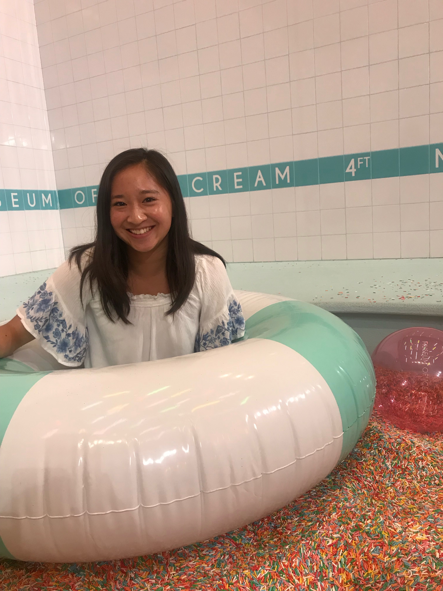

Hello! My name is Juliette Wong and I am a second-year undergraduate student studying Mathematical Sciences with a concentration in Operations Research and Statistics at Carnegie Mellon University.
I am an aspiring business or data analyst, and I am especially interested in using statistics and/or technology to present data in the clearest way possible. In my free time, I enjoy dancing, hand-making cards, and helping others out.
Feel free to browse my website to learn more about my work experience or involvement in extracurriculars and to check out my dance portfolio!